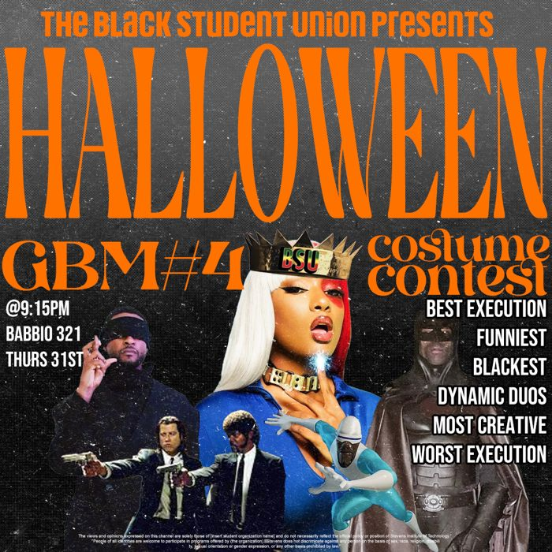

Kojo Takes Photos / Archive / The Census
The Census
One picture from every shoot, in the order it happened. Each date, camera and edit below comes from the metadata saved inside the files, so the story is told by the pictures themselves.
19shoots and projects counted so far
2,971finished files across them
2022–26freshman year to super senior
3cameras: his own Nikon D5300, a Fujifilm X100F lent by the RGB Photography club, and a Canon T5i from Dan
The whole archive, counted
Across OneDrive there are 71,172 image files: 41,524 JPEGs, 28,352 raw files (Nikon NEF, Canon CR2, DNG, Fujifilm RAF), 835 PNGs and 294 Photoshop files, sorted into roughly 240 shoot folders. Sophomore year alone holds 40,117 of them, partly because it includes Lightroom backups and copies. The timeline below shows the 19 shoots looked at closely so far.
How the editing changed
- 2022 – 2023Straight out of the camera. None of the freshman or sophomore-fall picks have any edit history.
- March 2024Lightroom shows up for the first time, on “a sunny day.” Five days from shooting to export.
- May 2024Ebony Night gets edited on an iPhone, in Lightroom mobile.
- Fall 2024 – 2025Lightroom on Windows becomes the routine for the FAME shoots, and Photoshop is used for the BSU eboard designs.
- Aug 2026The Barge and amelie mary b go from shoot to export in 3–4 days. That’s the fastest turnaround in the census.
Black Student Union, 2022–2025
Three years with the BSU. As historian in his freshman year, 2022–23, he shot 415 frames on his Nikon D5300 across campus candids starting Oct 2022, GBMs on Feb 14 and May 2, Black History Month on Feb 20–23, Ebony Night on Apr 22, and Wild ’n Out on Apr 27–28. As historian again in 2023–24, he covered Trap and Paint, Nigerian Independence Day, Family Feud with CSA, Kwanzaa, Kickoff, Love n BSU, Wonder Woman, BSU × LAA × FAST and Ebony Night, with over 5,500 photos in that folder alone. As social media director in 2024–25, he designed the flyers. The date, place and time are printed on each flyer, and its last save shows how far ahead it was finished.

Apr 10, 2024
Karaoke Night — BSU × FAST × LAA
TechFlex · 9:15 PM
Flyer finished Mar 26, 2024 · 15 days ahead
Three clubs, one flyer. The photos sit in the historian folder BSUxLAAxFAST (466 files).
Sep 4, 2024
GBM #1 — Welcome Back to School
Babbio 319 · 9:15 PM
Flyer finished Sep 3, 2024 · the morning before
The first flyer of the social media director year. It’s saved as “finalfinallast”.
Sep 24, 2024
Trap n Paint
Babbio 321 · 9:15 PM
Flyer finished Sep 19, 2024 · 5 days ahead
The recap slides were done Sept 26, two days after the event.

Oct 2024
Nigerian Independence Day
with the African Students Association
Flyer finished Oct 11, 2024 · wrap-up post
A thank-you carousel set in the event photos, with facts about Nigeria running across the slides.

Oct 15, 2024
GBM No. 3 — Movie Night
Babbio 321 · 9:15 PM
Flyer finished Oct 1, 2024 · 14 days ahead
Oct 2024
Freshman Representative Elections
sign-up form
Flyer finished Oct 24, 2024

Oct 31, 2024
GBM #4 — Halloween Costume Contest
Babbio 321 · 9:15 PM
Flyer finished Oct 25, 2024 · 6 days ahead

Dec 12, 2024
Kwanzaa ’24
Bissinger · 9:15 PM
Flyer finished Nov 25, 2024 · 17 days ahead
The drafts show the plan moving: Dec 3, then Dec 5 in TechFlex, then Dec 12 in Bissinger.

Feb 13, 2025
Love n BSU — Pop the Balloon
Babbio 122 · 9:15 PM
Flyer finished Feb 1, 2025 · 12 days ahead
With FAST, LAA and CSA. Sign-ups closed Feb 10.

Feb 18, 2025
Natural Hair Care
UCC TechFlex · 9:15 PM
Flyer finished Jan 30, 2025 · 19 days ahead
For Black History Month.

Feb 27, 2025
The Official After Party — Club BSU
Bissinger · doors 10 PM
Flyer finished Feb 27, 2025 · the morning of
The last version moved it from Friday the 28th to Thursday the 27th and was saved that morning.
Apr 8, 2025
Slide-Showdown
Babbio 321 · 9:15 PM
Flyer finished Apr 3, 2025 · 5 days ahead